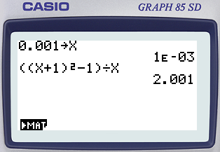
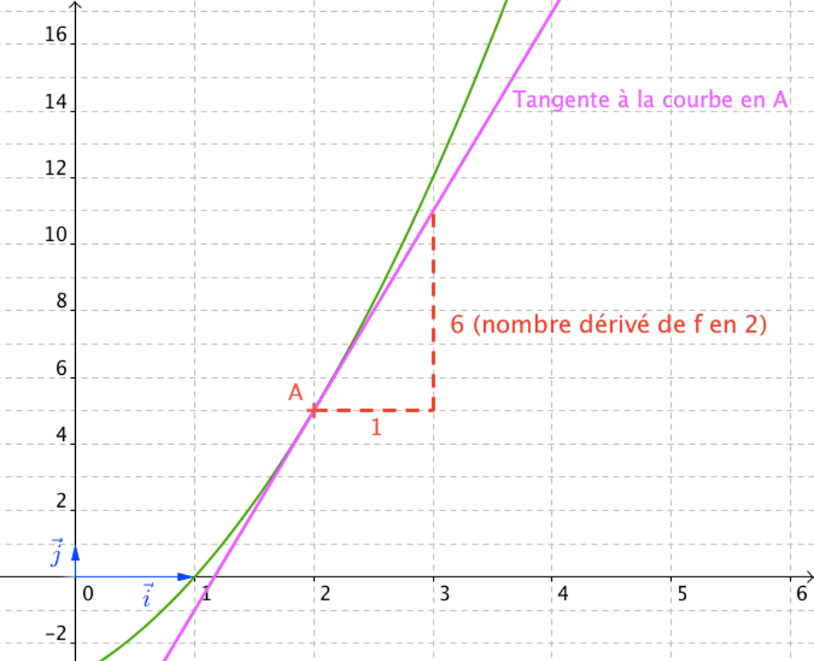

Dérivation (1) : Nombre dérivé
Limite en zéro d’une fonction
Cas $\lim\limits_{x\to 0}~f(x)=k$
Exemple
Soit $f$ définie sur $~\left]-\infty;0\right[\cup\left]0 ; +\infty\right[~$ par $~f(x)=\cfrac{((x+1)^2-1)}{x}~$
L’image de $0$ par $f$ n’existe pas.
On s’intéresse cependant aux valeurs de $f(x)$ lorsque $x$ se rapproche de $0$.
$$ \begin{array}{|c|c|c|c|c|c|c|c|c|c|}\hline \rule[-4mm]{0cm}{1cm}x & -0.5 & -0.1 & -0.01 & -0.001 & \ldots & 0.001 & 0.01 & 0.1 & 0.5 \\ \hline \rule[-4mm]{0cm}{1cm}f(x) & 1.5 & 1.9 & 1.99 & 1.999 & ? & 2.001 & 2.01 & 2.1 & 2.5 \\ \hline \end{array} $$
On constate que $f(x)$ se rapproche de $2$ lorsque $x$ se rapproche de $0$.

$~$
On dit que la limite de $f$ lorsque $x$ tend vers $0$ est égale à $2$ et on note :
$$\lim\limits_{x\to 0}~f(x)=2$$
Cas $\lim\limits_{x\to 0}~f(x)=\pm\infty$
Exemple
Soit $g$ définie sur $\left]-\infty;0\right[\cup\left]0;+\infty\right[$ par $g(x)=\cfrac{1}{x^2}$
A l’aide de la calculatrice, on constate que $g(x)$ devient de plus en plus grand lorsque $x$ se rapproche de $0$.
$~$
On dit que la limite de $g$ lorsque $x$ tend vers $0$ est égale à $+\infty$ et on note :
$$\lim\limits_{x\to 0}~g(x)=+\infty$$
Définition (approximative) de la limite de $f$ pour $x\to 0$
Definition
On dit que $f(x)$ a pour limite $L$ lorsque $x$ tend vers $0$ si les valeurs de $f(x)$ peuvent être aussi proche de $L$ que l’on veut pourvu que $x$ soit suffisamment proche de $0$.
On note :
$$\boxed{\lim\limits_{x\to 0}~f(x)=L}$$
et on lit : $\quad$ “La limite de $f(x)$ lorsque $x$ tend vers $0$ est égale à $L$”.
Nombre dérivé
Rappel : Pente d’une droite
Def
Soit $f$ définie sur $I$. Soit deux réels $a$ et $b$ appartenant à $I$ tels que $a\lt b$.
Soit $A$ et $B$ deux points de $\Cf$ d’abscisses respectives $a$ et $b$.
La pente (ou le coefficient directeur) de la droite $(AB)$ est égal à :
$$\text{pente}=\cfrac{f(b)-f(a)}{b-a}$$
Fonction dérivable
Def
Soit $f$ définie sur $I$. Soit un réel $a\in I$.
Soit $A$ et $M$ deux points de $\Cf$ d’abscisses respectives $(a)$ et $(a+h)$, avec $h\neq 0$.
La pente de la droite $(AM)$ est égale à :
$$\cfrac{f(a+h)-f(a)}{h}$$

$~$
Lorsque $M$ se rapproche de $A$, la pente de $(AM)$ est égale à la limite de $~\cfrac{f(a+h)-f(a)}{h}~$ lorsque $h$ tend vers $0$.
Cette pente s’appelle le nombre dérivé de $f$ en $a$ et se note $f’(a)$.
Définition : Fonction dérivable en $a$
Definition
On dit que la fonction $f$ est dérivable en $a$ s’il existe un nombre réel $L$, tel que :
$$\lim\limits_{h\to 0}~\left(\cfrac{f(a+h)-f(a)}{h}\right) = L$$
$L$ est appelé le nombre dérivé de $f$ en $a$ et se note $f’(a)$
$$\boxed{f’(a)=\lim\limits_{h\to 0}~\left(\cfrac{f(a+h)-f(a)}{h}\right)}$$
Methode
Démontrer qu’une fonction est dérivable
Soit $f$ définie sur $\mathbb{R}$ par $f(x)=x^2+2x-3$.
Pour démontrer que $f$ est dérivable en $x=2$, calculons $\left(\cfrac{f(2+h)-f(2)}{h}\right)$ pour $h\neq 0$ :
$$ \begin{aligned} \cfrac{f(2+h)-f(2)}{h} & =\cfrac{\left((2+h)^2 +2(2+h)-3\right)-\left(2^2 +2\times 2-3\right)}{h} \\ ~ & =\cfrac{(4+4h+h^2 +4+2h-3)-(5)}{h} \\ ~ & =\cfrac{6h+h^2 }{h}\qquad=\cfrac{h(6+h)}{h}\qquad=6+h \end{aligned} $$
Donc
$$f’(2)=\lim\limits_{h\to 0}~\left(\cfrac{f(2+h)-f(2)}{h}\right) = \lim\limits_{h\to 0}~(6+h)=6$$
On en déduit que $f$ est dérivable en $x=2$.
Le nombre dérivé de $f$ en $2$ vaut $6$ et on note : $f’(2)=6$
Tangente à une courbe
Definition
Soit $f$ définie sur $I$ et dérivable en un nombre réel $a\in I$.
Soit :
- $A$ est un point d’abscisse $a$ appartenant à $\Cf$.
- $f’(a)$ est le nombre dérivé de $f$ en $a$.
La tangente à $\Cf$ au point $A$ est la droite passant par $A$ de pente le nombre dérivé $f’(a)$.
Methode
Déterminer la pente d’une tangente à une courbe
Soit $f$ définie sur $\mathbb{R}$ par $\ldots$
$$f(x)=x^2 +2x-3$$
$\ldots$ dérivable en $x=2$.
On a vu que le nombre dérivé de $f$ en $2$ vaut $6$ : $\quad f’(2)=6$.
Ainsi la tangente à $\Cf$ au point $A$ d’abscisse $2$ est la droite passant par $A$ et de pente $6$.

Prop
Une équation de la tangente à $\Cf$ en $A\left(a~;~f(a)\right)$ est :
$$\boxed{y=f’(a)(x-a)+f(a)}$$
Demo
La tangente a pour pente $f’(a)$ donc son équation est de la forme :
$$y=f’(a)\times x+b$$
$\ldots$ où $b$ est l’ordonnée à l’origine.
La tangente passe par le point $A\Big(a~;~f(a)\Big)$, donc :
$$f(a)=f’(a)\times a+b\quad\iff\quad \color{blue}b=\Big(f(a)-f’(a)\times a\Big)\color{black}$$
On en déduit que l’équation de la tangente peut s’écrire :
$$ \def\arraystretch{1.8}\begin{array}{ccl} y=f’(a)\times x+\color{blue}\Big(f(a)-f’(a)\times a\Big) & \iff & y=f’(a)\times x-f’(a)\times a + f(a) \\ & \iff & y=f’(a)(x-a)+f(a) \\ \end{array} $$
Methode
Déterminer une équation d’une tangente à une courbe
Soit $f$ définie sur $\mathbb{R}$ par $f(x)=x^2+2x-3$
On a vu que $f’(2)=6$.
Donc son équation est de la forme :
$$ \begin{array}{rll} & y=f’(a)(x-a) & +f(a) \\ \iff & y=f’(2)(x-2) & +f(2) \\ \iff & y=6(x-2) & +(2^2+2\times 2-3) \\ \iff & y=6x-12 & +5 \\ \iff & y=6x & -7 \end{array} $$
Une équation de tangente à $\Cf$ au point $A$ d’abscisse $2$ est : $~y=6x-7$